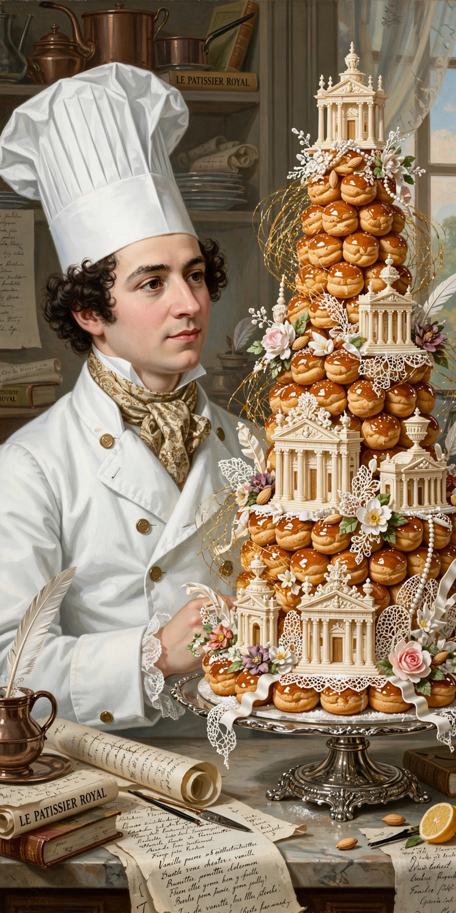

| Marie-Antoine Carême | |
|---|---|
 "The king of chefs and the chef of kings" | |
| Born | 8 June 1784, Paris, France |
| Died | 12 January 1833 (aged 48), Paris, France |
| Occupation | Chef, author |
| Known for | Founder of haute cuisine; classifying the mother sauces; the chef's toque |
| Major work | L'Art de la cuisine française au XIXe siècle |
| Employers | Talleyrand; the Prince Regent (George IV); Tsar Alexander I |
Marie-Antoine Carême (French: [maʁi ɑ̃twan kaʁɛm]; 8 June 1784 – 12 January 1833), known as Antonin Carême, was a pioneering French chef who is regarded as the founder of French haute cuisine and the first internationally renowned celebrity chef. Abandoned by his parents in Paris during the French Revolution, he rose from a kitchen boy to cook for Talleyrand, the Prince Regent in Brighton, and Tsar Alexander I, earning the epithet "the king of chefs, and the chef of kings."
Apprenticed to the celebrated pâtissier Sylvain Bailly, Carême taught himself architecture from prints in the Bibliothèque nationale and applied it to confectionery, creating vast edible centrepieces (pièces montées) modelled on temples, ruins, and pagodas. During twelve years with Talleyrand he developed the system of grande cuisine and helped replace Russian-style multi-course service with menus built around sauces and garnishes.
Carême systematised French sauce cookery, classifying sauces into families derived from basic "mother sauces" — espagnole, velouté, béchamel, and allemande, a scheme later revised to include sauce tomate and hollandaise — and created foundational preparations such as the demi-glace tradition descending from espagnole. He is credited with popularising the tall white chef's hat (the toque), the soufflé, and standardised recipe writing. His multi-volume L'Art de la cuisine française au XIXe siècle codified classical French cooking for the century.
Worn out by decades over charcoal stoves, Carême died in Paris in 1833, aged 48, reportedly with the words that his death was caused by "the charring of the kitchen fires."